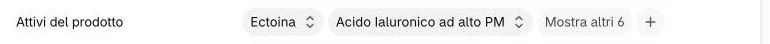
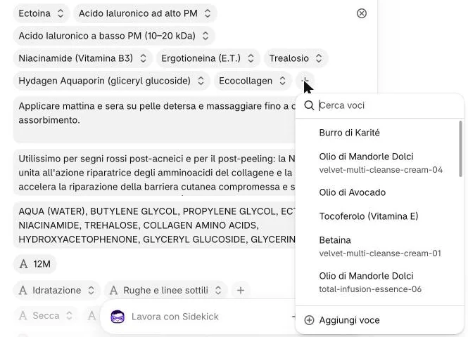
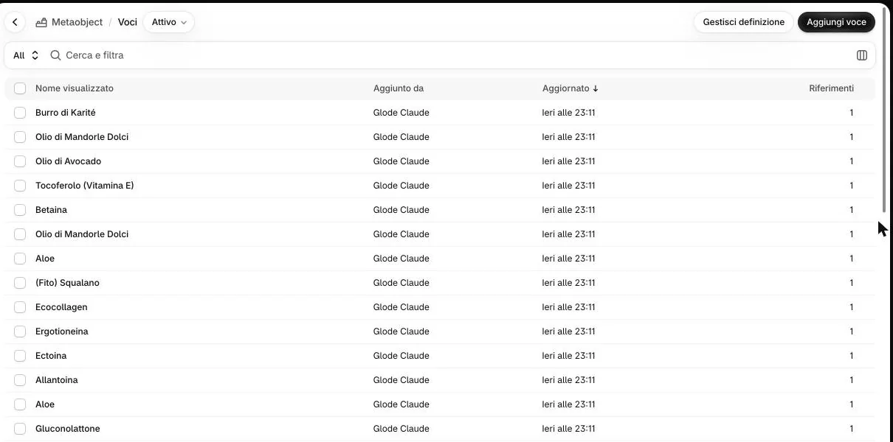

Aprite il prodotto e scendete fino a «Attivi del prodotto». Cliccate il + in fondo al campo.

Nella finestra che si apre cliccate «Aggiungi voce», in fondo.

Non qui2Nell’elenco c’è già un attivo con lo stesso nome: posso sceglierlo?
No. L’elenco contiene gli attivi di tutti i prodotti, e lo stesso nome in prodotti diversi ha quasi sempre un testo diverso (per esempio due «Olio di Mandorle Dolci»). Sceglierlo lo collegherebbe a due prodotti: correggendolo cambierebbe su entrambi.
Nella pagina «Aggiungi Attivo» cliccate «+ Aggiungi» accanto a «Nome» e a «Testo», scrivete, poi salvate.
3Un esempio?
Nome «Betaina»; Testo «Sostanza naturale estratta dalla barbabietola da zucchero (trimetilglicina), eccellente vettore di idratazione…» (Velvet Multi-Cleanse Cream). Il nome è quello che compare sul sito.
Non vedo il pulsante per salvare
Compare solo dopo che avete scritto qualcosa. La ✕ in alto a destra chiude senza salvare.
Tornati sul prodotto, controllate che l’attivo nuovo sia nel campo e cliccate «Salva».
Che ordine conta?
Quello del campo: i primi tre sono gli «Attivi chiave» sotto la descrizione, i primi quattro vanno nel riquadro degli attivi della galleria. Spostare una voce non l’abbiamo provato insieme in questa guida: se l’ordine deve cambiare, scriveteci quale prodotto e in che ordine.
Per togliere un attivo, cliccatelo nel campo e scegliete «Cancella» in fondo al menu; poi «Salva».
Non quiNon qui5Cosa non cliccare in questo menu?
Un nome dell’elenco, cliccato, sostituisce l’attivo che avete aperto con quello di un altro prodotto. Il ⊗ che compare a destra passando con il mouse sulla riga toglie tutti gli attivi del campo. Se succede: uscite senza salvare.
Per correggere un testo, aprite «Contenuto» → «Metaobject» → «Attivo», poi la voce.

6Ci sono più attivi con lo stesso nome: quale apro?
Il codice del prodotto (per esempio «velvet-multi-cleanse-cream-04») si vede nella finestra del + sul prodotto, sotto il nome. Qui distinguete le voci dal testo. «Riferimenti» dice quanti prodotti usano la voce.
La correzione si vede anche su un altro prodotto: perché?
Quella voce era collegata a due prodotti. Sul prodotto che non doveva cambiare, togliete la voce con «Cancella» e scrivetene una nuova con «Aggiungi voce», con il testo giusto.
Sul sito
Gli attivi compaiono nella sezione «Gli attivi», nella tendina «Gli attivi», nella riga «Attivi chiave» sotto la descrizione (i primi tre) e nel riquadro degli attivi della galleria (i primi quattro). Sempre nell’ordine del campo.
 Non qui
Non qui
5
Non qui
Non qui
5